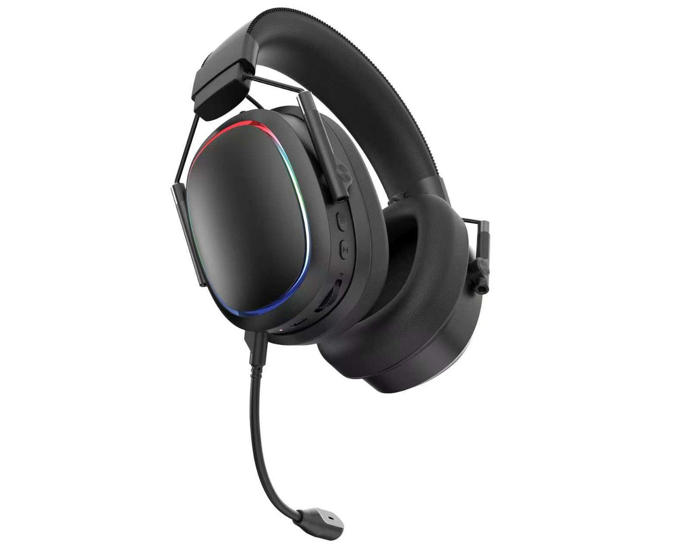

Channel-focused selection
Compare models by product role, appearance, package direction and channel fit.

Latin America customers
TALRIVO helps Latin America importers, distributors and online sellers compare gaming headsets, Bluetooth headphones, TWS Bluetooth earbuds, speakers and Type-C earphones for local channel plans.

Product fit
Use this page to review TALRIVO product directions for this market scenario.
Product Review notes
Compare models by product role, appearance, package direction and channel fit.
For Latin America buyers, terms such as auricular TWS Bluetooth or auriculares TWS usually point to true wireless Bluetooth earbuds. Compare TWS044F and Earclip09S before sampling.
Combine gaming headsets, TWS, Bluetooth headphones, speakers and Type-C earphones in one reviewing plan.
State whether Spanish, Portuguese or another language is needed for packaging or manuals so the scope can be checked after model selection.
Send quantity range, destination country and target product role so TALRIVO can recommend suitable models.
Useful links
Product FAQ
Yes. Customers can discuss multiple categories before narrowing down a sample list.
Auricular TWS Bluetooth or auriculares TWS usually refers to true wireless Bluetooth earbuds. Buyers should compare in-ear and open-ear samples, charging cases, packaging and branding details before choosing a model.
Wired gaming headsets, wireless gaming headsets, TWS earbuds, Bluetooth speakers and Type-C earphones are common starting points for market and channel review.
Yes. Logo and packaging direction can be discussed after model and quantity direction are clear.
Share product category, destination market, quantity range, target positioning and branding needs. TALRIVO will recommend suitable model directions for review.